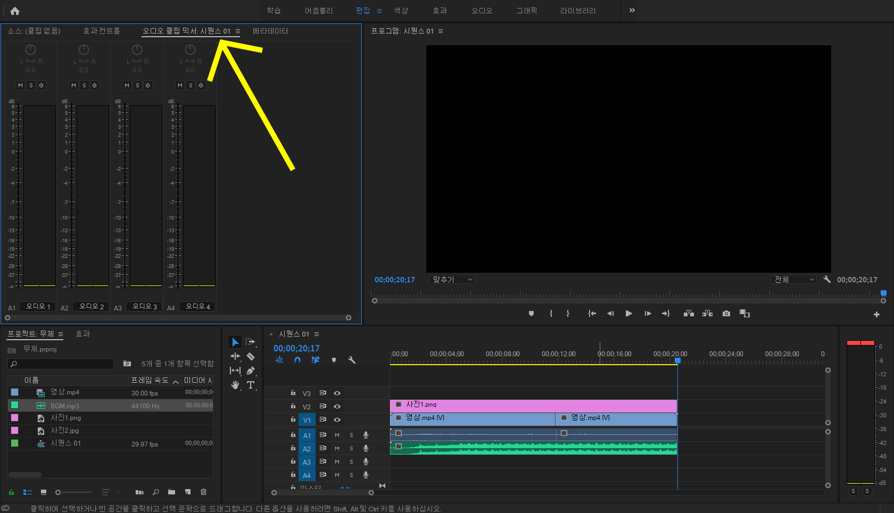

음악 추가
이번에는 음악을 넣는 법에 대해 알아보겠습니다.
먼저 준비한 배경음악을 영상의 음성 바로 밑에 끌어다 옮겨 줍니다.
음악이 영상보다 길기 때문에 컷 편집과 똑같은 방법으로
제가 필요한 부분까지 잘라주겠습니다.
영상을 재생해보면 시퀀스 옆칸에서 무언가 오르락 내리락 하는 데
저것은 볼륨의 크기를 알려줍니다.
만약 볼륨의 크기가 너무 크거나 작으면 어떻게 해야 할까요?

우측 상단을 보시면 이렇게 오디오 클립 믹서라는게 보일 겁니다.
여기에 들어가서 볼륨을 위아래로 조절 하시면 될 것입니다.
참고로 오디오1이 영상 소리이고 오디오2가 배경음악입니다.
다음은 자막 추가입니다!